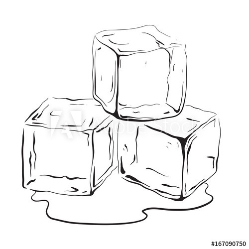

Mahi
Mahendra Singh Dhoni
Born
Jul 07, 1981(38 years)
Birth Place
Ranchi
Role
WK-Batsman
Batting Style
Right Handed Bat
Bowling Style
Right-arm medium
ICC Rankings
Career Stats
| Format | Matches | Innings | Runs | High Score | Avg | SR | 100s | 50s | Catches | Stumpings |
|---|---|---|---|---|---|---|---|---|---|---|
| Test | 90 | 144 | 4876 | 224 | 38.1 | 59.1 | 6 | 33 | 256 | 38 |
| ODI | 350 | 297 | 10773 | 183* | 50.6 | 87.6 | 10 | 73 | 321 | 123 |
| T20I | 98 | 85 | 1617 | 56 | 37.6 | 126.1 | 0 | 2 | 57 | 34 |
| IPL | 190 | 170 | 4432 | 84* | 42.2 | 137.8 | 0 | 23 | -- | -- |
Profile
Mahendra Singh Dhoni captained the Indian national team in limited-overs formats from 2007 to 2016 and in Test cricket from 2008 to 2014. He is the only captain in the history of Cricket to win all ICC trophies. A right-handed middle-order batsman and wicket-keeper, Dhoni is one of the highest run scorers in One Day Internationals (ODIs) with more than 10,000 runs scored and is considered an effective "finisher" in limited-overs formats. He is also regarded by some as one of the best wicket-keepers and captains in modern limited-overs international cricket. Under Dhoni's captaincy, India won:
- ICC Twenty20 World Cup (2007)
- Asia Cups (2010 and 2016)
- ICC Cricket World Cup (2011)
- ICC Champions Trophy (2013)
He made his ODI debut in December 2004 against Bangladesh, and played his first Test a year later against Sri Lanka. Dhoni has been the recipient of many awards, including the ICC ODI Player of the Year award in 2008 and 2009 (the first player to win the award twice), the Rajiv Gandhi Khel Ratna award in 2007, the Padma Shri, India's fourth highest civilian honour, in 2009 and the Padma Bhushan, India's third highest civilian honour, in 2018. He was named as the captain of the ICC World Test XI in 2009, 2010 and 2013. He has also been selected a record 8 times in ICC World ODI XI teams, 5 times as captain. The Indian Territorial Army conferred the honorary rank of Lieutenant Colonel to Dhoni on 1 November 2011. He is the second Indian cricketer after Kapil Dev to receive this honour.
Dhoni also holds numerous captaincy records such as the most wins by an Indian captain in ODIs and T20Is, and most back-to-back wins by an Indian captain in ODIs. He took over the ODI captaincy from Rahul Dravid in 2007 and led the team to its first-ever bilateral ODI series wins in Sri Lanka and New Zealand. In June 2013, when India defeated England in the final of the Champions Trophy in England, Dhoni became the first captain to win all three ICC limited-overs trophies (World Cup, Champions Trophy and the World Twenty20). After taking up the Test captaincy in 2008, he led the team to series wins in New Zealand and the West Indies, and the Border-Gavaskar Trophy in 2008, 2010 and 2013. In 2009, Dhoni also led the Indian team to number one position for the first time in the ICC Test rankings.